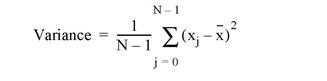
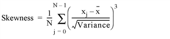
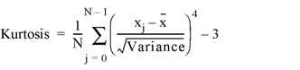
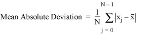

The MOMENT function computes the mean, variance, skewness, and kurtosis of a sample population contained in an n-element vector X. When x = (x0, x1, x2, ..., xn-1), the various moments are defined as follows:
|
   
|
This routine is written in the IDL language. Its source code can be found in the file moment.pro in the lib subdirectory of the IDL distribution.
Result = MOMENT( X [, DIMENSION=value] [, /DOUBLE] [, KURTOSIS=variable] [, MAXMOMENT={1|2|3|4}] [, MDEV=variable] [, MEAN=variable] [, /NAN] [, SDEV=variable] [, SKEWNESS=variable] [, VARIANCE=variable] )
A four-element vector containing the mean, variance, skewness, and kurtosis of the input vector. If the vector contains n identical elements, MOMENT computes the mean and variance, and returns the IEEE value NaN for the skewness and kurtosis, which are not defined.
An n-element integer, single-, or double-precision floating-point vector.
Set this keyword to a scalar indicating the dimension across which to calculate the moment. If this keyword is not present or is zero, then the moment is computed across all dimensions of the input array.
If this keyword is present, then the moment is only calculated only across a single dimension. In this case, the results for the KURTOSIS, MDEV, MEAN, SDEV, SKEWNESS, and VARIANCE keywords will be arrays with one less dimension than the input. The result will be an array where the supplied dimension has been removed, but will have a trailing dimension of 4, with the 4 slices corresponding to the mean, variance, skewness, and kurtosis.
For example, if X has dimensions [L,M,N], and DIMENSION is set to 2, then the Result will have dimensions [L,N,4]. Result[*,*,0] will contain the mean, Result[*,*,1] will contain the variance, etc.
Set this keyword to force the computation to be done in double-precision arithmetic.
Set this keyword to a named variable that will contain the kurtosis of X.
Set this keyword to one of the following values to limit the number of moments calculated. Moments that are not calculated are replaced by the IEEE value NaN in the result array.
|
1 |
Calculate only the mean. |
|
2 |
Calculate the mean and variance. |
|
3 |
Calculate the mean, variance, and skewness. |
|
4 |
Calculate the mean, variance, skewness, and kurtosis (the default). |
Note: If X only contains one element, the value of the MAXMOMENT keyword is ignored. In this case, MOMENT returns a Mean equal to X, and NaN for all other output values.
Set this keyword to a named variable that will contain the mean of X.
Set this keyword to a named variable that will contain the mean absolute deviation of X.
Set this keyword to cause the routine to check for occurrences of the IEEE floating-point values NaN or Infinity in the input data. Elements with the value NaN or Infinity are treated as missing data.
Set this keyword to a named variable that will contain the standard deviation of X.
Set this keyword to a named variable that will contain the skewness of X.
Set this keyword to a named variable that will contain the variance of X.
; Define an n-element sample population:
X = [65, 63, 67, 64, 68, 62, 70, 66, 68, 67, 69, 71, 66, 65, 70]
; Compute the mean, variance, skewness and kurtosis:
result = MOMENT(X)
PRINT, 'Mean: ', result[0] & PRINT, 'Variance: ', result[1] & $
PRINT, 'Skewness: ', result[2] & PRINT, 'Kurtosis: ', result[3]
IDL prints:
Mean: 66.7333
Variance: 7.06667
Skewness: -0.0942851
Kurtosis: -1.18258
|
4.0 |
Introduced |
|
7.1 |
Added MAXMOMENT keyword |
|
8.0 |
Added DIMENSION, KURTOSIS, MEAN, SKEWNESS, VARIANCE keywords |
KURTOSIS , HISTOGRAM , MAX , MEAN , MEANABSDEV , MEDIAN , MIN , STDDEV, SKEWNESS , VARIANCE